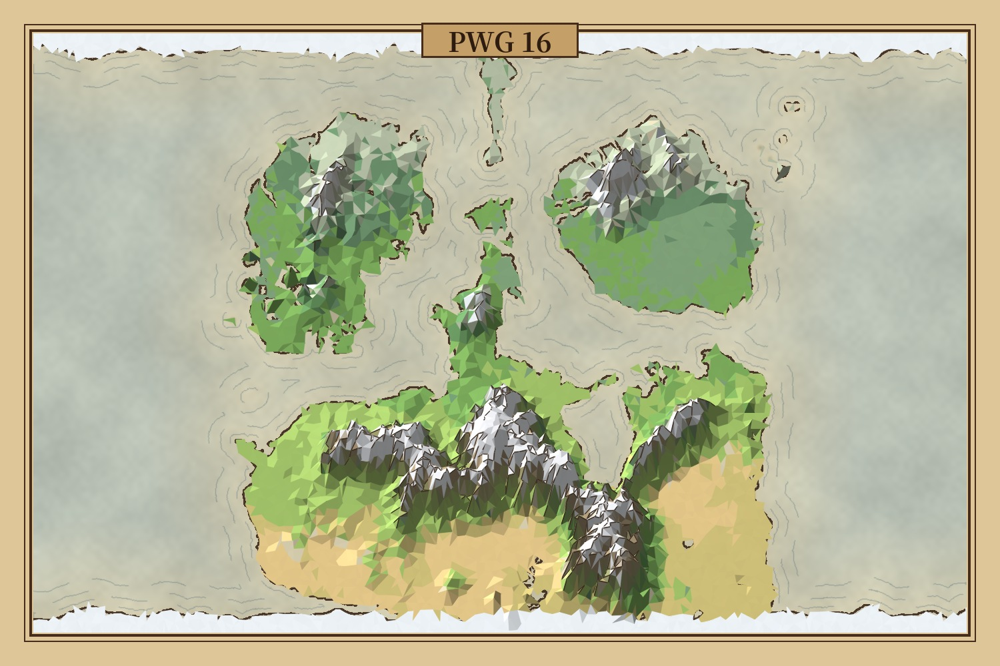
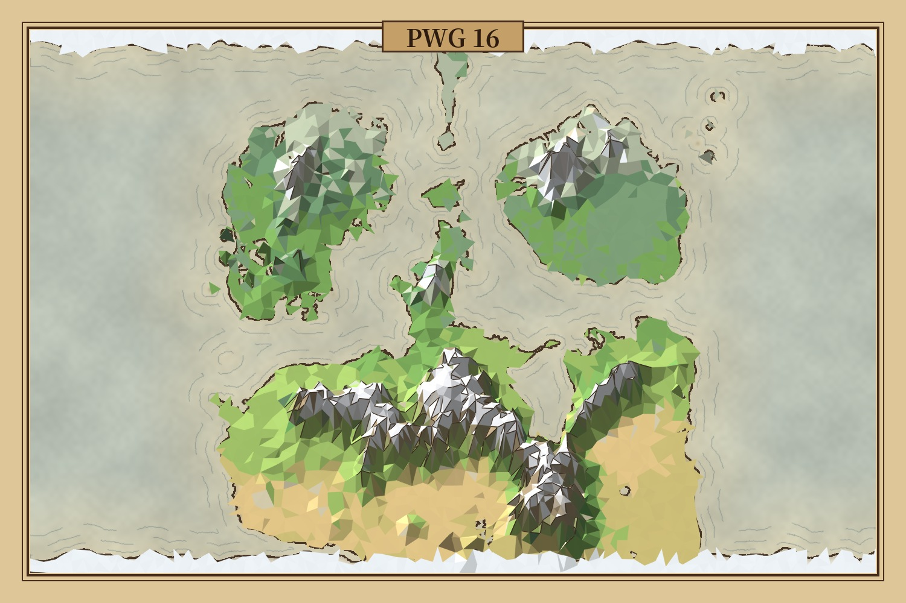
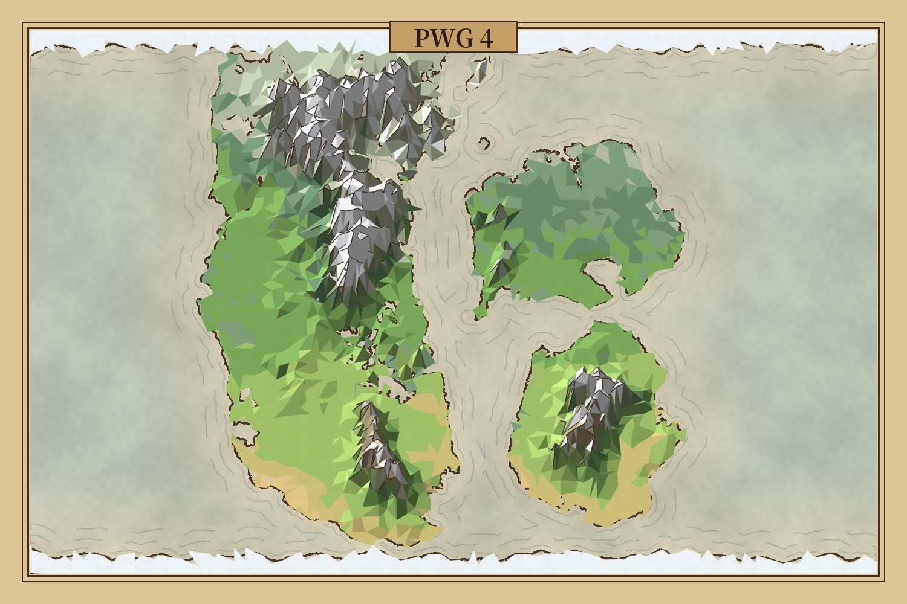
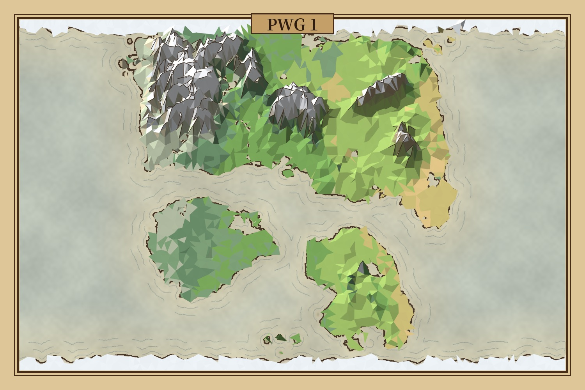

概要: mapstyle40の設定(強さ・目の比・山の縁・山の範囲)はそのままに、面の数だけを約半分にしました(面の間隔を1.414倍。面の数は間隔の2乗に反比例するため)。各図は上=mapstyle40、下=今回です。
| 世界 | mapstyle40の面の数 | 今回 | 割合 |
|---|---|---|---|
| seed7 | 9216 | 5020 | 54% |
| seed5 | 9386 | 5133 | 55% |
| seed16 | 8857 | 4752 | 54% |
| seed4 | 8872 | 4770 | 54% |
| seed1 | 8873 | 4766 | 54% |
面の数は、実際に描いた面を数えた値(海の上の面を除く)。ちょうど半分ではなく約54%で、点の配置の乱れや、海岸・山頂に別に置く点の分が減らないため。
 絵番号 E165
絵番号 E165 絵番号 E170
絵番号 E170
 絵番号 E166
絵番号 E166 絵番号 E171
絵番号 E171

絵番号 E167
絵番号 E172 絵番号 E168
絵番号 E168
絵番号 E173 絵番号 E169
絵番号 E169
絵番号 E174次: 面の細かさをどちらにするか(mapstyle40の細かさ/今回/その間)を決めていただく。